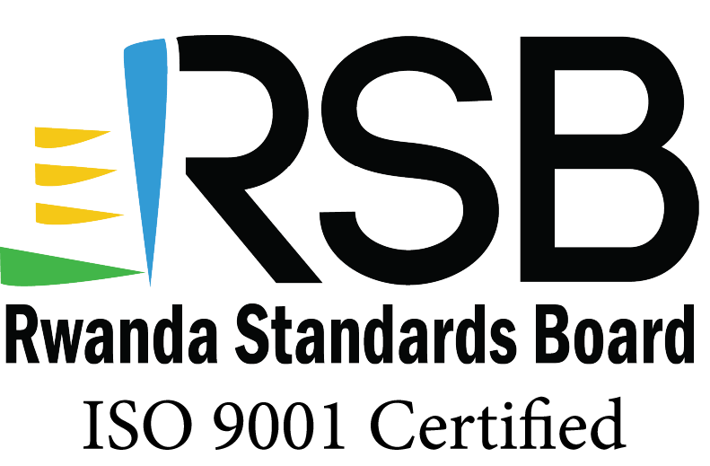
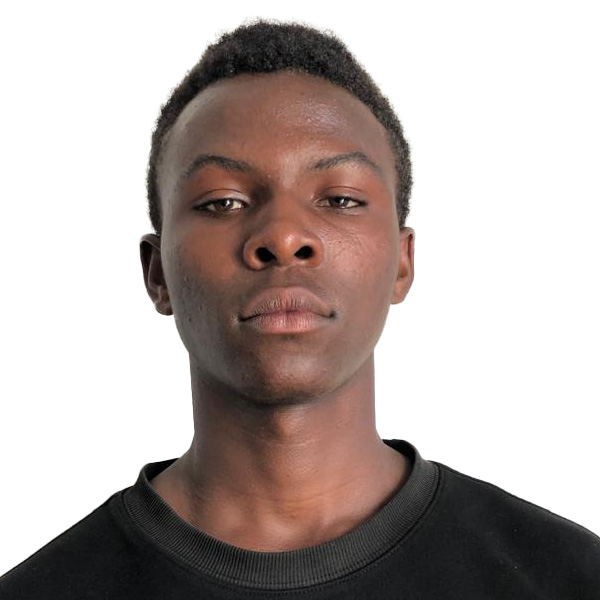

About Brilliant Researchers Africa
Building a new era of science-driven problem solvers transforming Africa's challenges into globally competitive solutions
Who We Are
Brilliant Researchers Africa (BRA) is a youth-led African community organization specializing in applied research, innovation, and sustainable development. Founded on September 4, 2024, by Eng. IGIRANEZA Meschack (Civil Engineering Technology expert) and Dr. NTAKIRUTIMANA Emmanuel (Physicist and Materials Scientist), BRA integrates scientific experimentation with prototyping to create real-world impact.
Our Vision
To be Africa's leading research hub for sustainable technologies, scientific empowerment, and prototype innovation that transforms communities and economies.
Our Mission
To build a generation of African scientists and innovators equipped with practical skills, entrepreneurial thinking, and research excellence through hands-on experimentation, inclusive mentorship, and the creation of sustainable and scalable technologies.
Our Collaborators
We are proud to collaborate with renowned institutions including:

RSB – Rwanda Standards Board NICST – National Industrial and Scientific Technology Center
NICST – National Industrial and Scientific Technology Center
Our Research Pillars
Applied Scientific Research & Functional Prototyping
We conduct problem-driven experimental research with a direct path to functional prototypes, bridging laboratory theory with field applicability.
Circular Materials Engineering & Waste Valorization
Transforming waste streams into functional materials using principles of materials science, polymer chemistry, and thermochemical conversion.
Disaster Risk Technology & Fire Safety Systems
Developing intelligent systems that autonomously detect, neutralize, and contain fire outbreaks with non-toxic compounds.
Engineering Solutions for Resilience
Prototyping mechanical systems tailored to African environmental conditions and production capacities.
Scientific Talent Acceleration & Technical Literacy
Building Africa's next generation of inventors through immersive training and interdisciplinary mentorship.
Our Leadership Team
Experts driving innovation through applied research and sustainable technology
Eng. IGIRANEZA Meschack
Chief Executive Officer
Civil engineering technology expert and founder of BRA, specializing in sustainable infrastructure development.
Mr. NTAKIRUTIMANA Gisa Emmanuel
Chief Research Officer
Physicist and materials scientist and co-founder BRA, leading BRA's research initiatives in sustainable materials development.

Rama
Lead Mechanical Designer
Specializes in context-sensitive mechanical systems for African environmental conditions.
Liliane
Atmospheric & Climate Scientist
Expert in climate modeling and disaster risk technology with focus on fire safety systems.
Cynthia
Lead Bio-Organic Chemist
Specializes in biochemical reprogramming of botanical materials and green chemical solutions.
Our Research Protocols
BRA-ALPHA – Protocol: IGNS.NOVA
Development and calibration of thermal reactivity containment agents designed for integration within fixed environments. Systems respond to non-linear heat flux escalation and execute autonomous dispersal.
BRA-BETA – Protocol: TERRA.REGEN
Extraction, transformation, and fusion of urban polymers and fibrous industrial remnants into load-bearing composite matrices. Applied in structural reinforcement and surface consolidation.
BRA-GAMMA – Protocol: BIOS-CATALYST
Biochemical reprogramming of botanical exudates and lignocellulosic residues through controlled thermal degradation pathways. Outputs: high-carbon solid fuels, volatile organic distillates.
BRA-DELTA – Protocol: MECH-SEED
Design, testing, and fabrication of manual kinetic instruments using reclaimed ferrous elements. Implements are tuned for soil interaction, force efficiency, and unit reproducibility.
BRA-OMEGA – Protocol: LEXIS.FORGE
Human capital enhancement through immersive exposure to experiential STEM ecosystems. Training incorporates semantic engineering, proposal synthesis, and live project execution cycles.